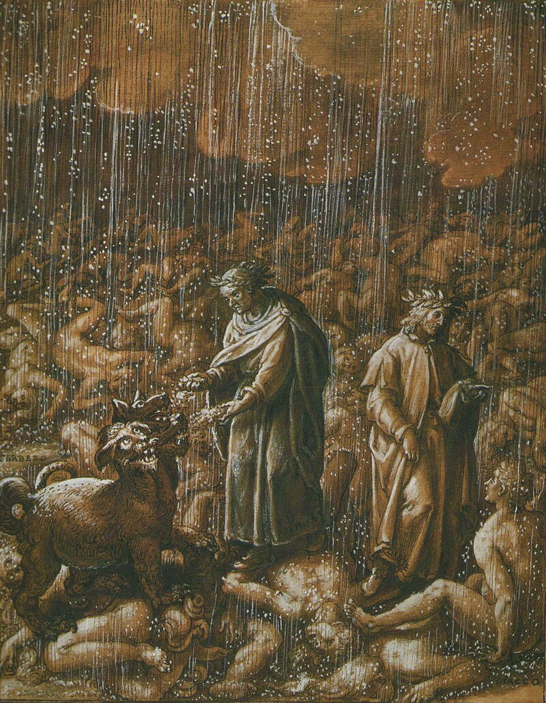

Man, Hell must suck, you think to yourself as you shamefully walk back up the convinient set of
stairs
located by the entrance of the fourth circle.
You stop by gluttony to give Cerberus a pet.
Wisely reflecting upon your time in Hell, you come up with a list of reasons it sucks, presented below!
Wow, what an insightful list!
You pat yourself on the back.
Wishing to remember this experience more fondly, you take out your journal and write down some summaries
about the layers!
some notes:
Limbo:
1st circle of Hell, a heaven "at home" for the Virtuous Pagans.
Lust:
2nd circle of Hell, here the punishment is light: that of flying in a storm eternally.
Gluttony:

3rd circle of Hell, the punishment is quite painful and disgusting: laying in putrid sludge while
waiting to be eaten alive by Cerberus.
Greed:
4th circle of Hell, where the punishment is a futile duel encumbered by weights.
These are the sins of self-control. The most common and the hardest to break out of. The sins of the
she-wolf.